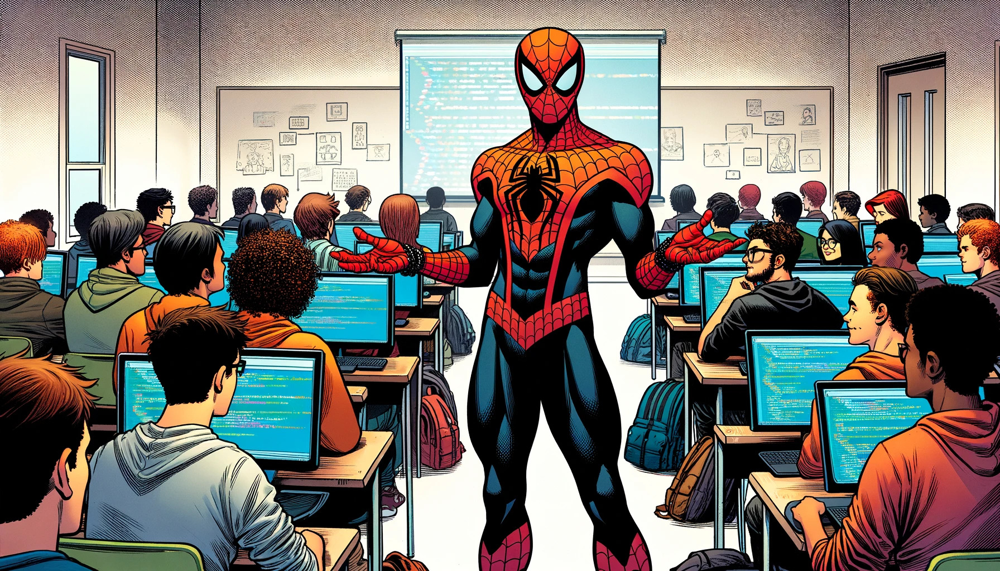

Phagocytize the Bytes#

Mind Set#
Before we embark on the journey of programming, it is essential that we align our expectations. Many beginners believe that programming is a skill that can be picked up over a weekend. This mindset is often destined for failure. Let us consider an alternative way of thinking: if programming were so easy to master, would there be such a high demand for proficient programmers? The likely answer is no.
Can you learn programming in one day? One week? One month? Yes, you can learn the basics in that time. However, the ability to apply these skills to solve real-world problems typically won’t develop that quickly.
So, how much time do you actually need? There’s no definitive answer to this, but I won’t leave you hanging. For someone with an average IQ, like myself, dedicating two hours daily can lead to a comfortable grasp of programming in approximately 2-3 months. Add another 1-2 months of building projects and solving problems, along with continued learning, and you’re likely to progress from the ‘beginner’ to ‘novice’ level.
Please note, this guide is tailored for absolute beginners. For those at a ‘novice’ level, I plan to write a separate guide in the future.
Mastering programming, just like any other discipline, demands a considerable investment of time. For some, this might mean one hour a day, while for others, it could be four. In my case, at the beginning of my journey (thanks to the pandemic), I devoted about 12-14 hours a day to coding. Find the schedule that suits you best. However, I believe that consistency is more important than the quantity of time spent each day. Remember, programming is a never-ending marathon, and maintaining motivation is crucial for continued progress. Investing excessive time in the initial stages of learning programming can often result in early burnout, so balance is key.
How do I know all of this? Because I’ve been there – I failed and gave up on learning, too. My turning point came when I encountered a simple problem that I wanted to not just solve, but automate and generalize. This challenge brought me back to the world of programming. Since that day, there has not been a single day when I have not engaged in coding. Keeping this in mind, let us proceed to another essential component of this guide.
Find a Problem and Build Projects#
Yes! If there is one key takeaway from this guide, it is this: Identify a problem you are deeply passionate about solving. I have been coding for almost 1.5 years now, and my enduring motivation comes from this simple principle.
How to Find a Problem? There is no one-size-fits-all answer to this. For me, the journey began with a biological problem: plotting a protein’s hydropathy index based on its sequence. While studying ‘Molecular Cell Biology’ by Alberts for my JAM exam, I encountered an intriguing graph and thought, ‘Hey, this looks cool. It could be useful for other biologists. Can I solve this?’ At that time, I did not have the necessary skills, but that is where the fun lies – in the journey of constant learning. I delved into new programming concepts, explored various libraries, and gained a deep understanding of hydropathy plots by reading the original research paper. Only then could I devise an algorithm to address this problem. Looking back, I am both proud of what I achieved and amused at how crude that initial code was.
So, keep your eyes open. When you see something that sparks your curiosity, something you are eager to crack – start a project with whatever knowledge you currently possess. Believe me, you will never find the process boring.
But which programming language to choose?#
This is a question that often baffles everyone. Indeed, selecting your first programming language can shape your early learning experience and introduce you to certain language-specific concepts. However, in the long run, the choice of language becomes less significant. Every programming language is grounded in fundamental concepts that are essential to learn, irrespective of the language you start with. Later in your journey, you can easily pick up a second language and its additional concepts, which I will discuss in more detail in my guide from novice to intermediate level. But for now, remember that whichever language you choose is not critically important. You will be learning the same fundamental principles, and that should be your focus, not the language itself. The algorithms you write will mostly depend not on the language but on your intellectual ability, your brain. A computer will execute any instruction we give it, and to formulate those instructions, you need to exercise your cognitive skills.
It is true that some languages are specialized for certain tasks. But as a beginner, you do not need to concern yourself with these specifics.
Having said all this, I recommend one of two languages for non-coder biologists, depending on the context:
Python: If you have the time to learn, start with this language. You won’t need to thank me in two years; just buy me a beer. Python is an excellent language with simple, English-like syntax, and a lot of abstraction handles the low-level details, so beginners don’t have to struggle with complex syntax. Choose Python, and you’ll never regret it. Additionally, the Python community is vast and incredibly supportive, and the extensive range of available libraries can significantly facilitate your learning.
R: In some cases, you might need to quickly learn a programming language for data analysis, such as when you join a lab and need to start analyzing wet lab data. In such instances, I recommend R. Note that choosing R doesn’t mean you’ll leap from beginner to novice over a weekend. You’ll still need around 4-6 months. R is developed by statisticians and is primarily designed for data analysis, so for this kind of work, the transition might be smoother. Additionally, a plethora of biological data analysis libraries are available in R.
Keep in mind, if your work or lab uses a specific language, whether it be Python, R, Julia, Perl, or another, consider learning that first to be productive from day one. As I’ve mentioned earlier, you can always pick up a second language later on with ease.